Wallet APS
Руководство пользователя
Версия 0.4.0 · Windows, Linux и Android
30 августа 2026 года
Содержание и быстрый старт
| 1 | Назначение программы, безопасность и установка |
| 2 | Открытие существующей базы и ввод пароля |
| 3 | Создание новой базы |
| 4 | Основное окно, панели и справочник кнопок |
| 5 | Папки и карточки |
| 6 | Просмотр, копирование, редактирование и вложения |
| 7 | Шаблоны и библиотеки иконок |
| 8 | Живой и точный поиск, отмена и корзина |
| 9 | Сохранение, экспорт и резервные копии |
| 10 | Android: узкий экран, поиск, файлы и галерея |
| 11 | Особенности Windows и Linux |
| 12 | Автоблокировка и защита изображений |
| 13 | Устранение неполадок |
Быстрый старт
- Запустите программу.
- Нажмите кнопку с изображением папки и выберите файл базы .swl.
- Введите пароль с клавиатуры или экранными кнопками и нажмите OK.
- Выберите папку слева, затем карточку в центральной области.
- Чтобы изменить карточку, откройте её контекстное меню и выберите Редактировать.
- После изменений нажмите Сохранить базу либо красную кнопку безопасного закрытия.
Перед первой работой сделайте резервную копию важного файла .swl и храните её отдельно.
1. Назначение и безопасность
Wallet APS — локальная программа для работы с базами SPB Wallet: паролями, заметками, банковскими карточками, папками, шаблонами и вложениями. Основной формат базы — .swl.
Главные правила безопасности
- Пароль базы нигде не сохраняется: ни в настройках программы, ни в кеше, ни в списке последних файлов.
- При выборе другой или новой базы пароль вводится заново.
- Программа не отправляет содержимое базы в интернет.
- Если база открывалась только для просмотра, её файл не перезаписывается, дата и время файла не меняются.
- Запись выполняется только после реального изменения карточки, папки, шаблона или другого поля.
Важно: восстановить забытый пароль средствами программы невозможно. Храните пароль в надёжном месте отдельно от базы.
Поддерживаемые платформы
| Платформа | Особенности |
|---|
| Windows | Трёхколоночное окно; мышь, правая кнопка, физическая клавиатура. |
| Linux | Та же логика работы и формат базы .swl. |
| Android | Системный выбор файлов, сенсорное управление и компактная вертикальная компоновка. |
1.1. Установка и обновление
| Платформа | Порядок установки |
|---|
| Windows | Запустите Wallet-APS-Setup-0.4.0.exe, подтвердите установку и используйте ярлык Wallet APS. Для удаления откройте параметры приложений Windows либо запустите деинсталлятор из папки программы. |
| Linux | Установите пакет Wallet-APS-linux-amd64.deb через менеджер пакетов или командой sudo apt install ./Wallet-APS-linux-amd64.deb. |
| Android | Откройте APK из выпуска, разрешите установку из выбранного источника и подтвердите установку. Приложению не требуется доступ ко всей памяти или к медиатеке. |
Обновление
- Закройте Wallet APS и сделайте копию важных файлов .swl.
- Установите новую версию поверх предыдущей.
- Откройте базу и убедитесь, что карточки, папки, шаблоны и вложения доступны.
База и программа — разные файлы. Удаление приложения не должно использоваться как способ удаления базы. Перед удалением приложения убедитесь, что знаете расположение файлов .swl и имеете резервную копию.
2. Открытие базы и ввод пароля
- Нажмите жёлтую кнопку с папкой. Проводник или системный выбор файлов откроется сразу.
- Выберите существующий файл базы .swl.
- Проверьте имя выбранного файла вверху справа и введите пароль.
- При необходимости нажмите глаз: первое нажатие показывает пароль, второе снова скрывает.
- Нажмите зелёную кнопку OK.
Кнопки экрана входа
| Кнопка | Назначение |
|---|
| ▣ папка | Открыть существующую базу. |
| + | Создать новую базу. |
| OK | Проверить пароль и открыть базу. |
| ⏻ | Выйти из программы. |
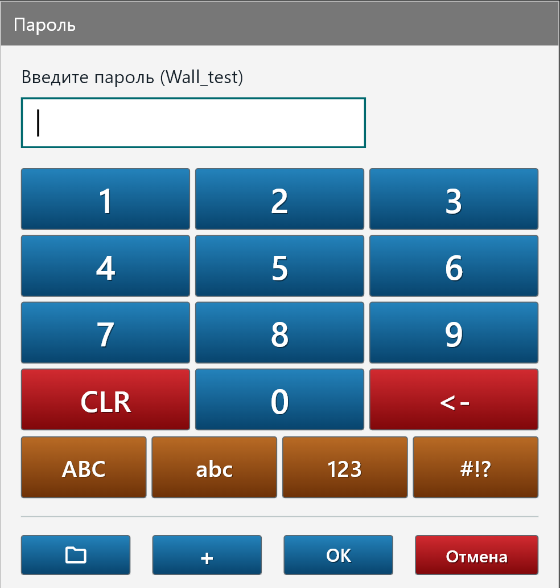
Имя базы выделено полужирным; дата и время показаны обычным шрифтом
Экранная клавиатура
CLR очищает пароль; ← удаляет последний символ; ABC, abc, 123 и #!? переключают набор символов.
Если файл доступен только для чтения, программа разрешит просмотр, но не сможет записать изменения. Выберите файл или папку с правом записи.
3. Создание новой базы
- На стартовом экране нажмите кнопку +.
- В поле Назначить путь выберите папку.
- Введите название базы. Расширение .swl добавляется автоматически.
- Введите новый пароль и повторите его.
- Нажмите OK.
Используйте уникальный длинный пароль. Не применяйте пароль от электронной почты или банковского приложения.
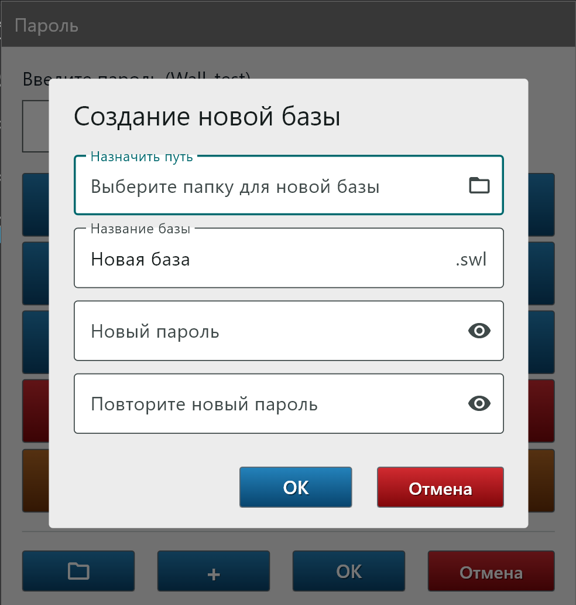
Диалог создания новой базы
После создания
База открывается сразу. Создайте нужные папки и карточки, затем выполните сохранение. Рекомендуется сразу сделать архивную копию через правую панель задач.
4. Основное окно
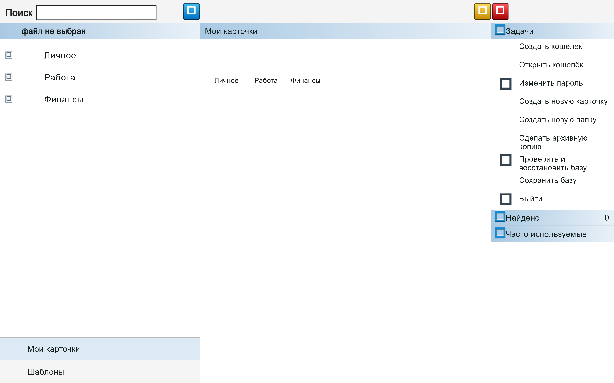
Слева — папки, в центре — карточки, справа — доступные задачи
| Область | Как использовать |
|---|
| Левая | Выберите папку базы или переключитесь между разделами Мои карточки и Шаблоны. Имя открытого файла показано рядом с основной иконкой Wallet APS. |
| Центральная | Откройте карточку обычным нажатием. Правая кнопка мыши или длительное нажатие показывает контекстное меню. |
| Правая — «Задачи» | Команды зависят от выбранного раздела: создание, импорт, экспорт, удаление, архивная копия и сохранение базы. |
Кнопки верхней строки
× очистить запрос и результаты
⌕ выполнить точный поиск
↶ открыть историю отмены
♻ восстановить удалённое
⏻ сохранить и безопасно закрыть
Подсказка: цвет обозначает назначение кнопки: зелёный — подтвердить, жёлтый — вспомогательное действие, синий — открыть/добавить, красный — закрыть или удалить.
4.1. Краткий справочник кнопок
| Где | Кнопка | Действие |
|---|
| Экран пароля | ▣ | Открыть файл базы. |
| + | Создать базу. |
| OK | Войти. |
| ⏻ | Выйти. |
| Просмотр карточки | ▣ | Сохранить выбранное вложение во внешний файл; появляется только при наличии вложений. |
| ✎ | Перейти к редактированию карточки. |
| × | Закрыть просмотр и вернуться в папку или к результатам поиска. |
| Редактор карточки | ▣ | Сохранить вложение во внешний файл. |
| + | Добавить вложение. |
| ▱ | Удалить выбранное вложение. |
| ↶ | Отменить правку внутри редактора. |
| ✓ | Сохранить карточку. |
| × | Закрыть редактор без сохранения. |
Перед удалением карточки, вложения или шаблона внимательно прочитайте подтверждение. Внутренняя корзина доступна только до закрытия программы.
5. Папки и карточки
Создание папки
- Выберите родительскую папку слева или корень базы.
- В панели Задачи нажмите Создать новую папку.
- Введите название и при необходимости выберите изображение.
- Подтвердите создание.
Создание карточки
- Выберите папку назначения.
- Нажмите Создать новую карточку.
- Выберите шаблон и изображение карточки.
- Заполните поля. Секретные значения будут скрываться точками.
- Нажмите зелёную кнопку сохранения.
Контекстное меню карточки
На компьютере нажмите правой кнопкой по карточке. На сенсорном экране выполните длительное нажатие.
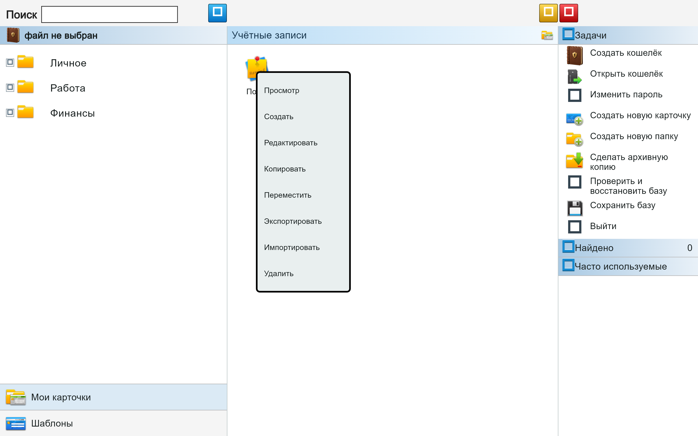
Из меню карточку можно редактировать, экспортировать, копировать или удалить
Перемещение в другую папку
В широком режиме Windows и Linux перетащите карточку из центра на нужную папку слева. Выполняется перемещение: копия в исходной папке не остаётся.
После закрытия просмотра карточки открывается папка, из которой карточка была вызвана. Если она открыта из результатов поиска, запрос и список результатов сохраняются.
6. Просмотр карточки и копирование
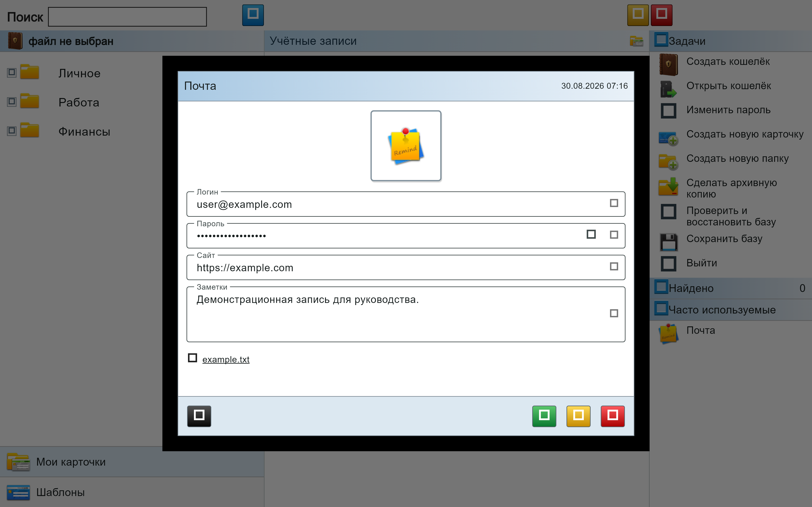
Просмотр полей, секретного значения и вложения
Копирование
- У каждого заполненного поля есть маленькая серая кнопка Копировать. Она помещает полное значение поля в буфер обмена.
- У скрытого пароля сначала расположен глаз, а справа от него — кнопка копирования. Глаз показывает или снова скрывает значение.
- Правый щелчок или длительное нажатие по пустому месту карточки открывает команду Скопировать всё. В буфер попадают названия полей и их значения, каждое значение — со следующей строки.
- В Windows и Linux выделенный фрагмент текста обрабатывается через меню Cut / Copy / Paste / Share.
Кнопки внизу
- ▣ Сохранить вложение — появляется при наличии вложений. Кнопки добавления вложения в просмотре нет.
- ✎ перейти к редактированию карточки.
- × закрыть просмотр и вернуться в исходную папку или к сохранённому списку поиска.
Буфер обмена: после копирования пароля не вставляйте его в неизвестные приложения и очистите буфер, когда значение больше не требуется.
6.1. Редактирование и вложения
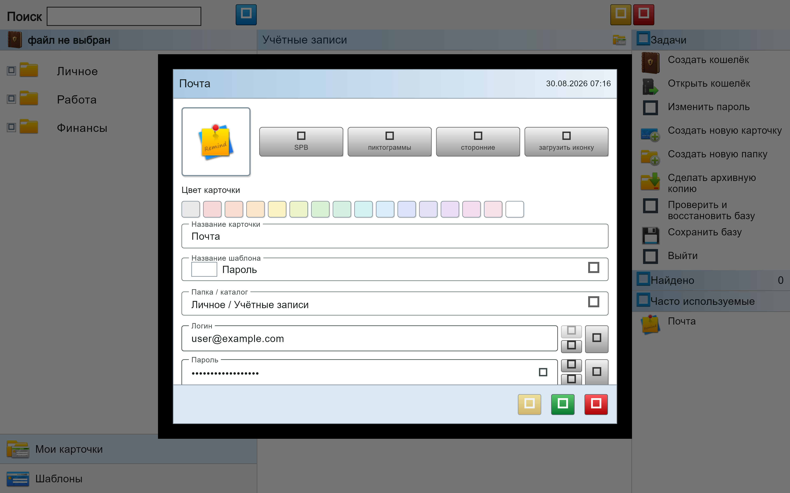
Редактор карточки с панелью вложений
- Откройте карточку и нажмите зелёную кнопку редактирования либо выберите Редактировать в контекстном меню.
- Измените обычные и секретные поля. Для выделенного текста в Windows/Linux доступно меню Cut / Copy / Paste / Share.
- Чтобы добавить файл, нажмите синюю кнопку + в блоке вложений и выберите файл.
- Чтобы удалить вложение, выберите его и нажмите красную кнопку с корзиной.
- Чтобы сохранить вложение отдельно, выберите его и нажмите чёрную кнопку с папкой.
- Нажмите зелёную кнопку ✓, чтобы сохранить карточку. После этого откроется её просмотр.
- Красная кнопка × закрывает редактор без сохранения.
Модальный режим: пока редактор открыт, переход к другим окнам Wallet APS невозможен. Сначала сохраните карточку или закройте редактор.
Если истечёт время бездействия, редактор или просмотр закроется, а программа вернётся на экран ввода пароля.
7. Работа с шаблонами
Шаблон определяет состав полей карточки: логин, пароль, сайт, номер карты, заметку и другие значения.
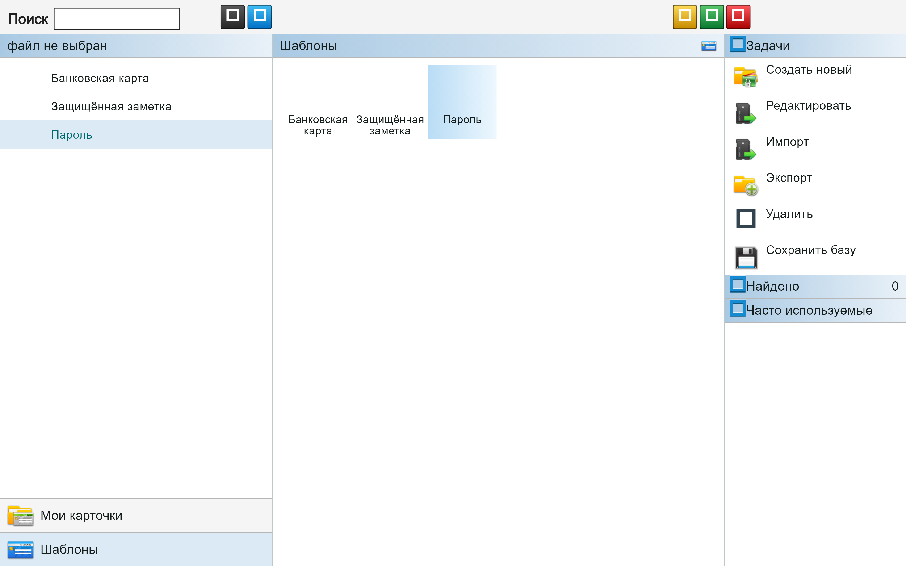
Раздел «Шаблоны»
Команды панели «Задачи»
| Команда | Действие |
|---|
| Создать новый | Создаёт собственный шаблон. |
| Редактировать | Изменяет выбранный шаблон и набор полей. |
| Импорт | Загружает шаблон из файла. |
| Экспорт | Сохраняет выбранный шаблон во внешний файл. |
| Удалить | Перемещает шаблон и связанные объекты во внутреннюю корзину текущей сессии. |
| Сохранить базу | Записывает накопленные изменения в исходный файл базы. |
Выбор изображения
Для папок, карточек и шаблонов доступны оригинальные значки SPB, встроенные пиктограммы, библиотека «сторонние» и загрузка собственного изображения. В актуальной библиотеке «сторонние» находится 957 значков из единого архива NewIcons.zip. Пользовательская иконка сохраняется внутри базы, поэтому исходный файл после добавления не требуется.
7.1. Меню и редактор шаблона
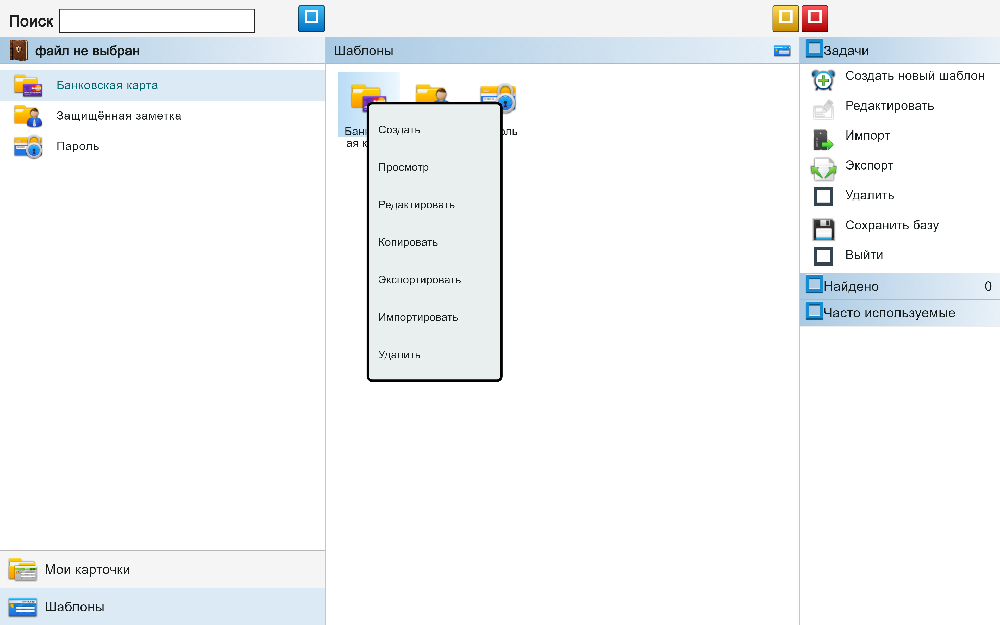
Правый щелчок или длительное нажатие
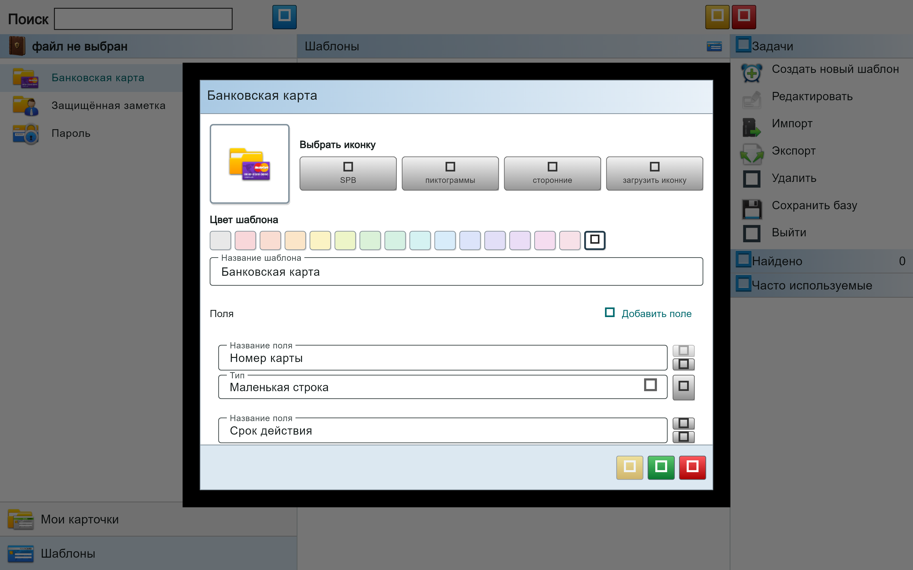
Редактор полей и пиктограммы
Создание и изменение
- Введите название шаблона.
- Выберите пиктограмму SPB Wallet.
- Добавьте поля и задайте тип каждого поля.
- Для паролей используйте секретный тип поля.
- Нажмите Сохранить.
Импорт из пустой области
В центральной области шаблонов нажмите правой кнопкой по свободному месту. На сенсорном экране выполните длительное нажатие. В появившемся меню выберите Импортировать.
8. Поиск, отмена и корзина
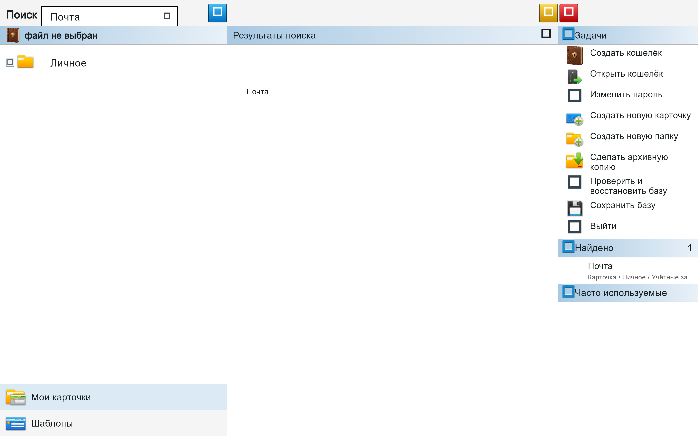
Живой поиск показывает найденные карточки и счётчик сразу при вводе
Живой поиск
- Начните вводить запрос — нажимать лупу не требуется.
- Поиск выполняется по папкам, названиям карточек и содержимому их полей во всей базе.
- Учитываются похожее русское/английское написание и текст, введённый в неверной раскладке.
- Откройте карточку из списка. После закрытия просмотра запрос и результаты останутся на месте.
- Нажмите крестик в строке, чтобы одновременно очистить запрос и список Найдено.
Точный поиск
После ввода запроса нажмите синюю лупу. В результатах останутся только полные совпадения с введённой строкой.
Отмена и восстановление
↶ открывает историю изменений текущего сеанса.
♻ открывает внутреннюю корзину и позволяет восстановить удалённые карточки, папки и шаблоны.
Только до закрытия: история отмены и внутренняя корзина очищаются после выхода из программы.
При удалении шаблона программа показывает количество связанных с ним карточек. Проверяйте это число перед подтверждением.
9. Сохранение и закрытие
Обычное сохранение
Нажмите Сохранить базу в правой панели задач. При успешной записи программа покажет сообщение.
Красная кнопка закрытия
Красная кнопка в верхней строке выполняет безопасное закрытие:
- если были изменения — сначала записывает базу, затем закрывает программу;
- если изменений не было — закрывает базу без перезаписи файла;
- если запись не удалась — не закрывает программу и позволяет повторить сохранение.
Архивная копия
Команда Сделать архивную копию создаёт отдельную копию базы. Используйте её перед массовым редактированием, импортом или удалением.
| Ситуация | Рекомендуемое действие |
|---|
| Только просмотр | Закройте программу — дата исходного файла не изменится. |
| Изменено хотя бы одно поле | Нажмите «Сохранить базу» или красную кнопку. |
| Файл только для чтения | Экспортируйте/скопируйте базу в доступную для записи папку. |
| Перед крупным импортом | Создайте архивную копию. |
10. Android и узкий экран
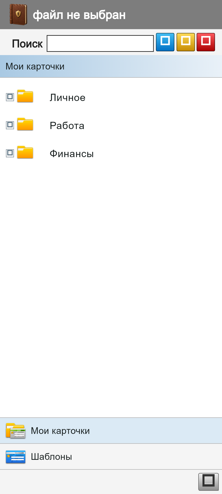
Папки и карточки
- На узком экране одновременно показана одна панель: папки, карточки, задачи или шаблоны.
- Переходите между панелями стрелками и нижними переключателями.
- Обычное нажатие открывает карточку; длительное нажатие показывает контекстное меню.
- При вводе текста поиска программа автоматически открывает центральную панель и сразу выводит подходящие карточки.
- После закрытия карточки из результатов поиска запрос и список остаются до нажатия крестика.
- Базы и вложения выбираются системным диалогом Android.
Одинаковый файл .swl можно открывать в Windows, Linux и Android. Не изменяйте одну копию базы одновременно на нескольких устройствах.
10.1. Поиск, файлы и галерея Android
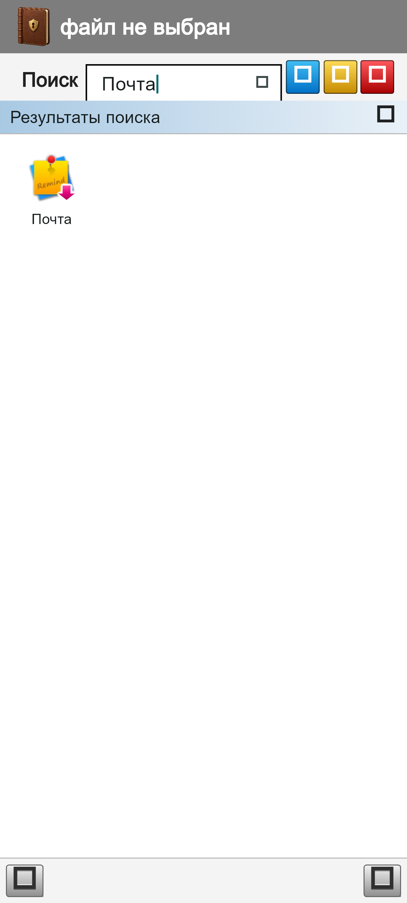
Автоматический переход к найденным карточкам
Как искать
- Откройте строку поиска и введите несколько символов.
- Центральная панель откроется автоматически.
- Нажмите карточку для просмотра.
- Закройте просмотр — список результатов сохранится.
- Для полного сброса нажмите крестик строки поиска.
Защита изображений
- Иконки программы находятся внутри APK или архивов и не публикуются в медиатеку.
- Временные данные используют служебное расширение .apsblob.
- Каталоги приложения закрыты от сканеров медиатеки файлом .nomedia.
- При явном сохранении изображения-вложения Android создаёт архив *.apsattachment.zip, а не открытый файл картинки. Обычные не-графические вложения сохраняются в своём формате.
Снимки экрана не блокируются. Не делайте скриншоты страниц с паролями и другими секретами: системный снимок может попасть в галерею или облачную синхронизацию.
11. Особенности Windows и Linux
Копирование и контекстное меню
- В режиме просмотра у заполненного поля имеется маленькая серая кнопка копирования.
- У скрытого пароля кнопка копирования расположена справа от значка глаза.
- В просмотре и редакторе выделите текст и нажмите правую кнопку мыши: доступны Cut / Copy / Paste / Share в зависимости от режима поля.
Перемещение карточек мышью
В широком трёхколоночном режиме перетащите карточку из центральной области на папку слева. После отпускания карточка перемещается в целевую папку; копия в исходной папке не остаётся.
Иконки и вложения
- В редакторе доступны библиотеки SPB, «пиктограммы», «сторонние» и загрузка собственного файла.
- Раздел «сторонние» содержит 957 иконок из единого архива NewIcons.zip.
- Карточки с вложениями отмечаются малиновой стрелкой в правом нижнем углу значка.
12. Автоблокировка и защита данных
Блокировка при бездействии
Через 2 минуты 45 секунд бездействия появляется предупреждение с обратным отсчётом 15 секунд. Если работу не продолжить, общее время бездействия достигнет 3 минут и база блокируется.
- Закрываются просмотр карточки и редактор карточки.
- Закрываются открытые поверх программы диалоги.
- Программа возвращается на экран ввода пароля.
- Окна просмотра и редактирования после блокировки повторно не открываются.
Практические рекомендации
- Используйте отдельный сложный пароль для базы.
- Храните резервную копию базы отдельно от рабочего файла.
- Не отправляйте незашифрованные экспортированные изображения и тексты через неизвестные приложения.
- После копирования секретного значения очистите буфер обмена, если он больше не нужен.
- Не открывайте одну базу одновременно на двух устройствах.
Забытый пароль восстановить невозможно. Wallet APS не хранит пароль и не имеет облачного сервиса восстановления.
13. Устранение неполадок
| Проблема | Что проверить |
|---|
| Пароль не принимается | Проверьте регистр букв, раскладку и специальные символы. Пароль не восстанавливается и не хранится программой. |
| База не сохраняется | Проверьте права записи, свободное место и доступность исходного файла. На Android повторно выберите файл через системный диалог. |
| Файл не изменил дату | Это нормально, если база использовалась только для просмотра. |
| Карточка или шаблон удалены случайно | До закрытия программы нажмите зелёную кнопку и восстановите объект. |
| Нужно отменить редактирование | Нажмите жёлтую кнопку и выберите нужное состояние из истории сеанса. |
| Старые изображения видны в галерее | Wallet APS не создаёт новые открытые изображения. Удалите ранее сохранённые пользователем копии и при необходимости очистите кеш галереи. Системные снимки экрана контролируются Android, а не программой. |
| База повреждена | Не перезаписывайте единственную копию. Откройте резервную или архивную копию. |
Контрольный список перед закрытием
- Нужные изменения сохранены.
- Ошибочно удалённые объекты восстановлены из зелёной корзины.
- Для важных изменений создана архивная копия.
- Программа закрывается красной кнопкой или штатным закрытием окна.
Не редактируйте один и тот же файл базы одновременно в нескольких программах или на нескольких устройствах.